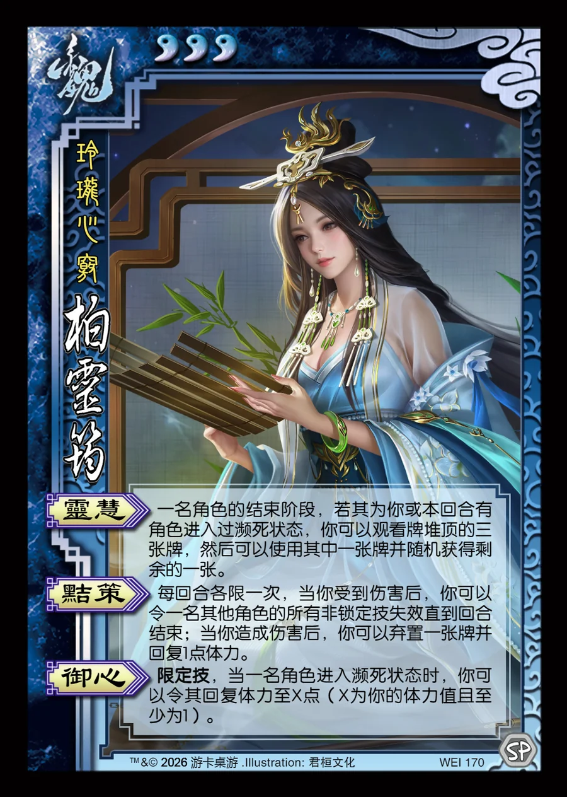

点击卡面查看大图
魏
柏灵筠
♥3玲珑心窍
灵慧
一名角色的结束阶段，若其为你或本回合有角色进入过濒死状态，你可以观看牌堆顶的三张牌，然后可以使用其中一张牌并随机获得剩余的一张。
黠策
每回合各限一次，当你受到伤害后，你可以令一名其他角色的所有非锁定技失效直到回合结束；当你造成伤害后，你可以弃置一张牌并回复1点体力。
御心限定技
限定技，当一名角色进入濒死状态时，你可以令其回复体力至X点（X为你的体力值且至少为1）。